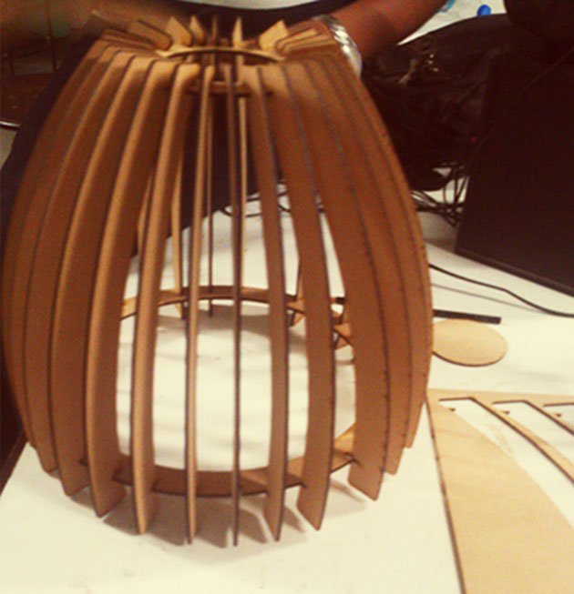
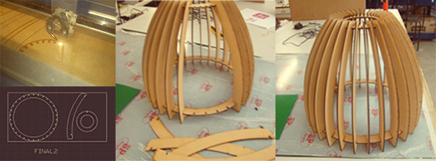
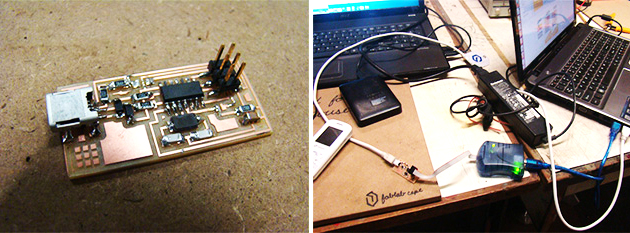
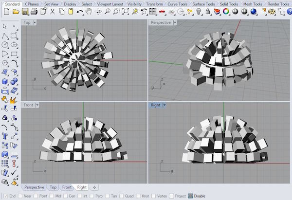
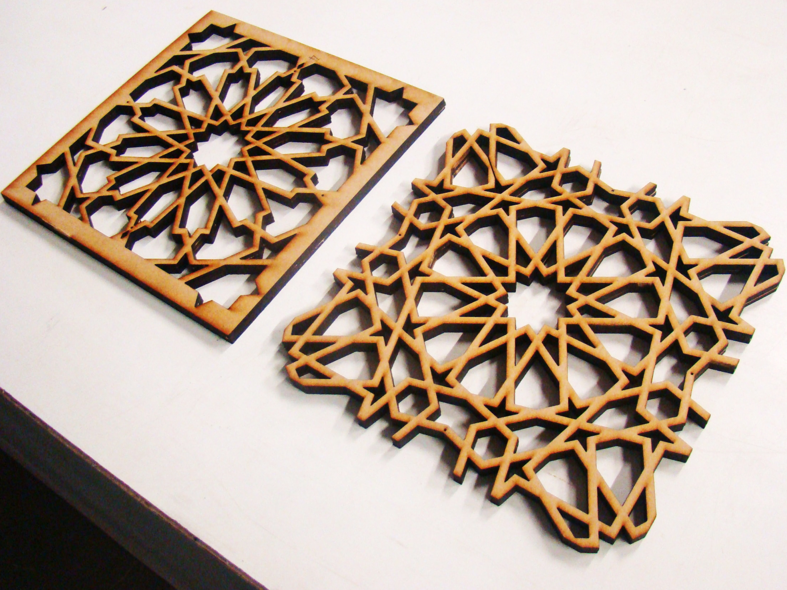
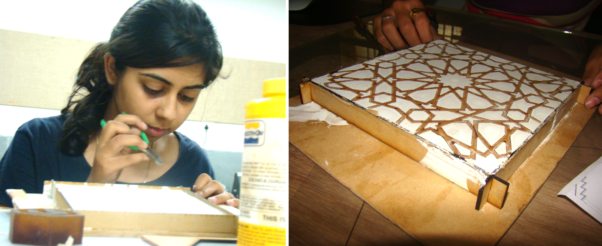
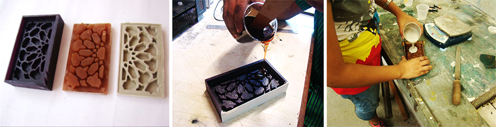
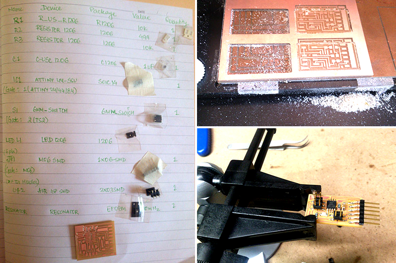

How to Make (Almost) Anything
Overview
Documentation of work done at FabLab at Centre for Environmental Planning and Technology Ahmedabad
Description
I got the opportunity to work in a FabLab set-up at the Centre for Environmental Planning and Technology during my summer internship in May-June 2014. The FabAcademy course was undertaken by my mentor Ms. Urvi Sheth, a graduate of TU Delft and a practicing architect in Ahmedabad.
I executed 12 mini-projects in 30 days exploring multi-disciplinary fields like digital fabrication, electronics production and rapid prototyping as part of the 'How to Make (Almost) Everything' course of FabAcademy, along with my co-intern Ashris Choudhary. For our final project we conceptualized and implemented an interactive arduino based musical facade which synced it's motion with the frequency of the audio beats.
FabLab, CEPT, Ahmedabad, 2014
Multi-disciplinary work done at Fab Lab ranging from digital fabrication, casting and moulding, sensors etc. The relevant circuit diagrams, codes, softwares and instructions were refered from the FabAcademny tutorials since it was our first time working with electronics. The coursework of the FabAcademy course was based on 1 week modules so every week was a new opportunity to learn skills and experiment.

For the 2nd week (computer controlled cutting), we formulated a quick prototype of a lighting fixture using press fit construction technique, laser cutting and MDF modules

Two circular rings were fixed, one for the top and the other at the bottom to hold all vertical members.
The exact shape of the vertical members were drafted in AutoCad. The parts were finally laser cut using Epilog laser cutting machine and the lamp was assembled.

For week 3 (electronics production) we made the FabISP, an in-system programmer for AVR microcontrollers. The FabISP was connected to the AVR ISP mkII and it showed a green signal indicating all connections to be soldered well.

Week 4 (3D scanning and printing) We made a highly undulating and irregular model in rhino for experimenting with 3D printing.

This was then imported to makerbot replicator 2X and printed using ABS

Week 8 was casting and moulding. For this assignment, we chose to cast an Arabic pattern. This model was then taken to AutoDesk 123D Catch to make horizontal sections for laser cutting. Using laser cutter we cut 1.5mm MDF in the same pattern and stuck the layers.

We then poured primex to form the cast. However our first experiment failed because the cast and mould could not be separated.

After this we decided to mill the same pattern in wax using the Roland Modela and cast a negative mould.

This experiemnt was a success and after creating one negative mould and one positive we were finally able to cast the Arabic pattern.

For week 5,6 and 7 (electronics design) we designed and fabricated a circuit board (echo hello world board) and added components like the button and the LED. It was a regular practice to first collect the individual components and stick them.